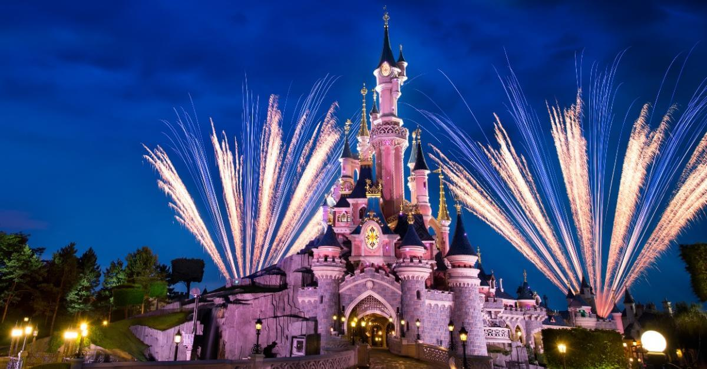
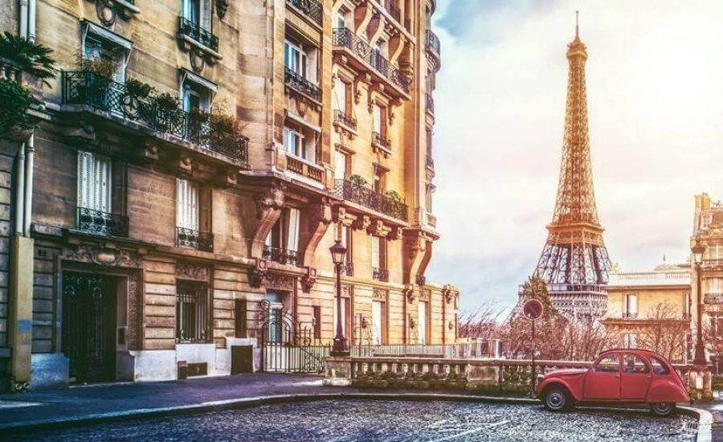
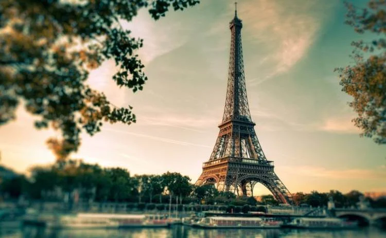

Заказной тур в Париж
В туре вас ожидает:
В Париже супер акция
- Тур на 7 дней, выезд по четвергам в 08:00, ночное возвращение в среду (ориентировочно после 23:00, в зависимости от прохождения границы)
- Вас ждет 4 страны: Польша, Чехия, Франция, Германия, с возможностью посетить волшебные города - Краков, Прага, Париж, Руан, Довиль, Трувиль-сюр-Мер, Онфлер, Нюрнберг, Бамберг, Величка
- В стоимости обзорные экскурсии по Праге и Париже
Тур без ночных переездов, 6 ночевок в замечательных отелях категории 3 * в Чехии, Германии, Праге
Увлекательное путешествие с возможностью посетить Нормандию и Диснейленд
info Стоимость тура включает:
- Сопровождение руководителем группы
- Проживание по маршруту: отель 3*
- Питание - завтраки
- Экскурсии по программе тура
- Страхование (Полис доступен для скачивания в личном кабинете. Просим выдавать туристам перед выездом!)

info Дополнительно оплачивается:
- Депозит - 33€ (на выбранную сумму необходимо заказать факультативные экскурсии во время тура)
- Депозит является обязательным при бронировании тура по акционной цене. Если тур приобретен по стандартной цене, депозит не оплачивается
- Проезд в общественном транспорте
- Факультативные экскурсии
- Входные билеты в экскурсионные объекты
- Личные расходы (обеды, ужины, и т.д.)
- City tax - 10€ (местный налог, оплачивается в автобусе руководителю группы по требованию отеля)
- Обязательная доплата за наушники - 2€/день/аренда (оплачивается в автобусе руководителю группы)

С 2017 года начал действовать безвизовый режим. Для поездки в 34 европейские страны Гражданам Украины следует иметь только биометрический паспорт.
При бронировании группы до 30 человек обязательная 1 дополнительная факультативная экскурсия предложена туроператором.
Для группы от 30 человек обязательные 2 дополнительные факультативные экскурсии предлагаемые туроператором.
Внимание! Для групп более 35 человек, необходимо писать индивидуальный запрос на почту: adriaticanna@gmail.com